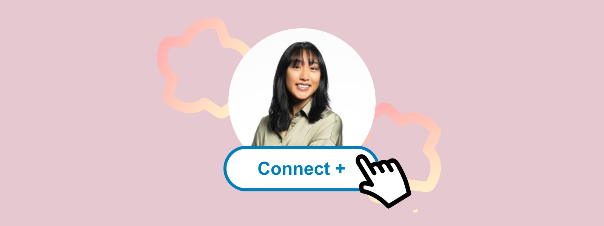
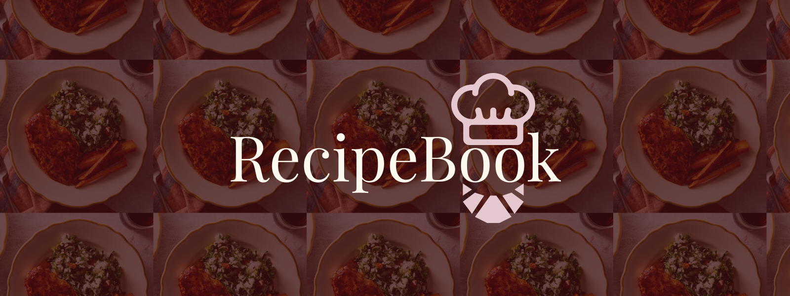
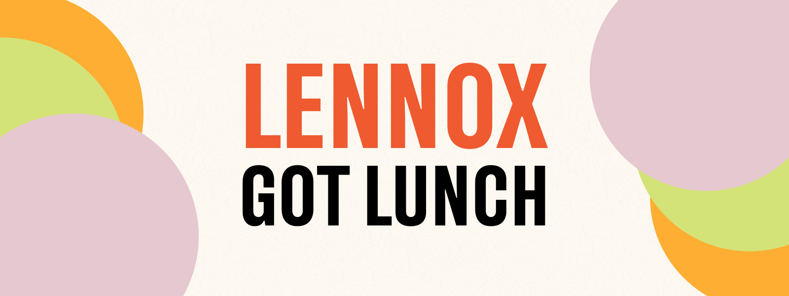

LinkedIn Redesign
A 10-week solo redesign of LinkedIn's "Connect" microinteraction, transforming a static button into an engaging, accessible experience!
UX/UI Design student passionate about designing intuitive, inclusive digital experiences.
View My Work
A 10-week solo redesign of LinkedIn's "Connect" microinteraction, transforming a static button into an engaging, accessible experience!

A semester-long project exploring modern web design principles through hands-on development, responsive design, and user-focused functionality with real recipes!

A collaborative project transforming a food truck brand into a fully functional web app with interactive animations and accessible user experiences.
I am a fourth-year UX/UI student at Drexel University in the 5-year, 3 co-op program. I'm passionate about designing intuitive, inclusive digital experiences that connect creativity with human behavior. My interests lie at the intersection of psychology, technology, and design.
When I'm not designing, you can find me exploring around Philly, reading fiction, or experimenting with the latest design tools!
Maria demonstrated a strong work ethic, technical aptitude, and genuine enthusiasm for her projects. She stands out for her curiosity, collaborative spirit, clear communication, and thoughtful approach to problem-solving. She's a quiet leader who consistently delivers quality work and builds strong connections—I highly recommend her for any future opportunity.
Director of Marketing Operations, NBME